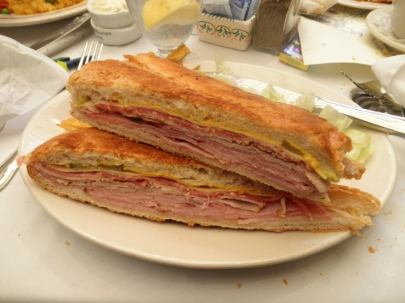

Homepage
Cubano Sandwich

Description
A Cuban sandwich, also known as a Cubano, is a sandwich made with ham, roast pork, Swiss cheese, pickles, mustard, and sometimes salami on Cuban bread. It's griddled until warm.
Ingredients
- Bread: Cuban bread, French bread or Italian bread
- Meat: Ham, roast pork, salami
- Cheese: Swiss cheese
- Condiments: Yellow mustard, garlic butter, pizza sauce
- Pickles: Dill pickles, bread-and-butter pickles, gherkins
Steps
- Marinate the pork in a tangy Cuban mojo
- Cook the pork until it reaches an internal temperature of 145°F
- Slice the pork thinly
- Spread mustard on the bread
- Layer the ingredients on the bread
- Grill the sandwich until the bread is crispy and the cheese is melted